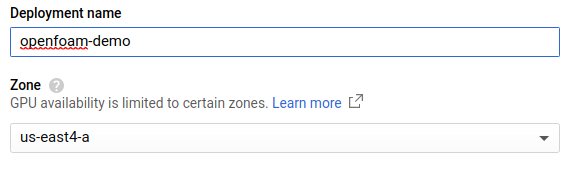
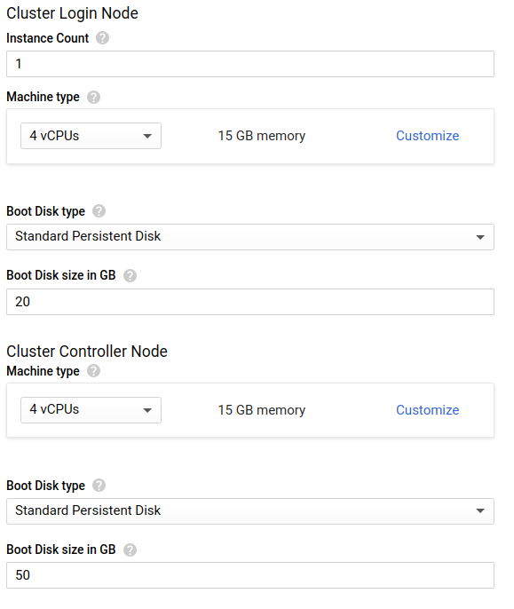
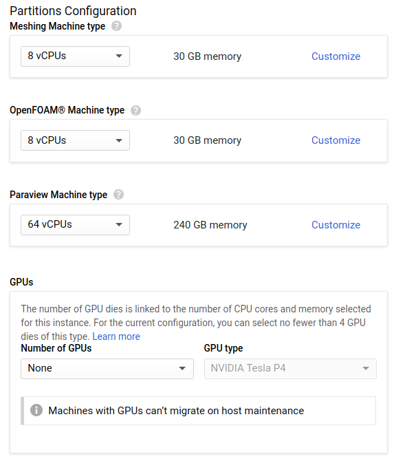

Last Updated: 2020-11-04
What you will build
In this codelab, you are going to deploy an auto-scaling HPC cluster on Google Cloud that comes with OpenFOAM®, Paraview, and mesh generation tools. You will use this infrastructure to simulate compressible flow past a NACA0012 aerofoil with OpenFOAM®.
What you will learn
- How to configure Identity and Access Management (IAM) policies for operating an HPC cluster on Google Cloud Platform
- How to deploy a cloud-native HPC cluster with the Slurm job scheduler
- How to set up basic Slurm accounting with Fluid Numerics' cluster-services
- How to run OpenFOAM® in parallel on Google Cloud Platform using a Slurm batch job
What you will need
- GSuite, Cloud Identity, or Gmail Account with an SSH key attached
- Google Cloud Platform Project with Billing enabled
- Project owner role on your GCP Project
- Sufficient Compute Engine Quota (24 vCPUs and 100 GB PD-Standard Disk)
Set IAM Policies
In HPC, there are clear distinctions between system administrators and system users. System administrators generally have "root access" enabling them to manage and operate compute resources. System users are generally researchers, scientists, and application engineers that only need to leverage the resources to execute jobs.
On Google Cloud Platform, the OS Login API provisions POSIX user information from GSuite, Cloud Identity, and Gmail accounts. Additionally, OS Login integrates with GCP's Identity and Access Management (IAM) system to determine if users should be allowed to escalate privileges on Linux systems.
In this tutorial, we assume you are filling the system administrator and compute engine administrator roles. We will configure IAM policies to give you sufficient permissions to accomplish the following tasks
- Create/Delete Google Compute Engine (GCE) VM instances
- SSH into GCE VM instances
- Escalate privileges on GCE VM instances

To give yourself the necessary IAM roles to complete this tutorial
- Navigate to IAM & Admin > IAM in the Products and Services menu.
- Click "+Add" near the top of the page.
- Type in your GSuite account, Cloud Identity Account, or Gmail account under "Members"
- Add the following roles : Compute Admin, Compute OS Admin Login, and Service Account User
- Click Save
In this section, you will deploy the Cloud CFD solution, an auto-scaling HPC cluster with the Slurm job scheduler and software that supports computational fluid dynamics workflows, including OpenFOAM®.
- Open https://console.cloud.google.com/marketplace/details/fluid-cluster-ops/cloud-cfd.
- Click "Launch"
- Give the deployment a name (e.g. OpenFOAM®-demo) and select the GCP zone where you want to deploy your cluster.
https://console.cloud.google.com/marketplace/details/fluid-cluster-ops/cloud-cfd - Leave the Controller and Login settings at their default settings.
- In the Partition Configuration section, set the OpenFOAM® Machine Type to `n1-standard-8`.
- Click "Deploy" and wait for the cluster to be created.
In this section, we will access the cluster's login node to configure Slurm accounting, so that you can submit jobs using the Slurm job scheduler.
- SSH into the cluster's login node
- Go root
sudo su- Create a cluster-configuration file using cluster-services.
cluster-services list all > config.yaml- Append a sample slurm_accounts block to the end of the
config.yamlfile.
cluster-services sample slurm_accounts >> config.yaml- Edit the cluster-configuration file so that you are allowed to submit to the
openfoampartition. Make sure you remove the emptyslurm_accounts: []that is pre-populated in the cluster-configuration file.
The exampleslurm_accountconfiguration below will create a Slurm account calledcfdwith the userjoeadded to it. Users in this account will be allowed to submit jobs to themeshing,openfoam, andparaviewpartitions.
slurm_accounts:
- allowed_partitions:
- meshing
- openfoam
- paraview
name: cfd
users:
- joe- Preview the changes for updating the
slurm_accounts. Verify that you have entered in the Slurm accounting information correctly.
cluster-services update slurm_accounts --config=config.yaml --preview- Apply the changes.
cluster-services update slurm_accounts --config=config.yaml - Exit from root.
exitIn this section, you will submit a Slurm batch job to run the NACA0012 tutorial included with OpenFOAM®. To help you with this, the Cloud CFD solution comes with an example Slurm batch script (/apps/share/openfoam.slurm). This example batch script can also be used as a starting point for other OpenFOAM® jobs on the cluster.
- From the cluster's login node, copy the example Slurm batch script to your home directory.
cp /apps/share/openfoam.slurm ./- Open the Slurm batch script in a text editor. Set the
--accountparameter to the Slurm account name that you set in step 5 from the previous section of this codelab. Save the file when you are done and exit the text editor.
#SBATCH --account=cfd- Submit the batch job using sbatch.
sbatch openfoam.slurm- Wait for the job to complete.
When the job completes, you will have the aerofoilNACA0012 OpenFOAM® simulation case directory in your home directory.
ls aerofoilNACA0012/
0 1050 1200 1350 150 300 450 550 700 850 Allclean dynamicCode log.transformPoints processor1 processor4 processor7
100 1100 1250 1400 200 350 50 600 750 900 Allrun log.blockMesh postProcessing processor2 processor5 system
1000 1150 1300 1410 250 400 500 650 800 950 constant log.extrudeMesh processor0 processor3 processor6In this codelab, you created an auto-scaling, cloud-native HPC cluster and ran a parallel OpenFOAM® simulation on Google Cloud Platform!
Further reading
- Learn how to connect your Cloud CFD cluster to your local Paraview client for post-processing and data visualization.
- Learn how to configure a high availability compute partition (multi-zone)
- Learn how to configure a globally scalable compute partition (multi-region)
- Learn how to configure OS-Login to ssh to your cluster with 3rd party ssh tools
- Learn how to manage POSIX user information with the directory API
- https://help.fluidnumerics.com/Cloud CFD